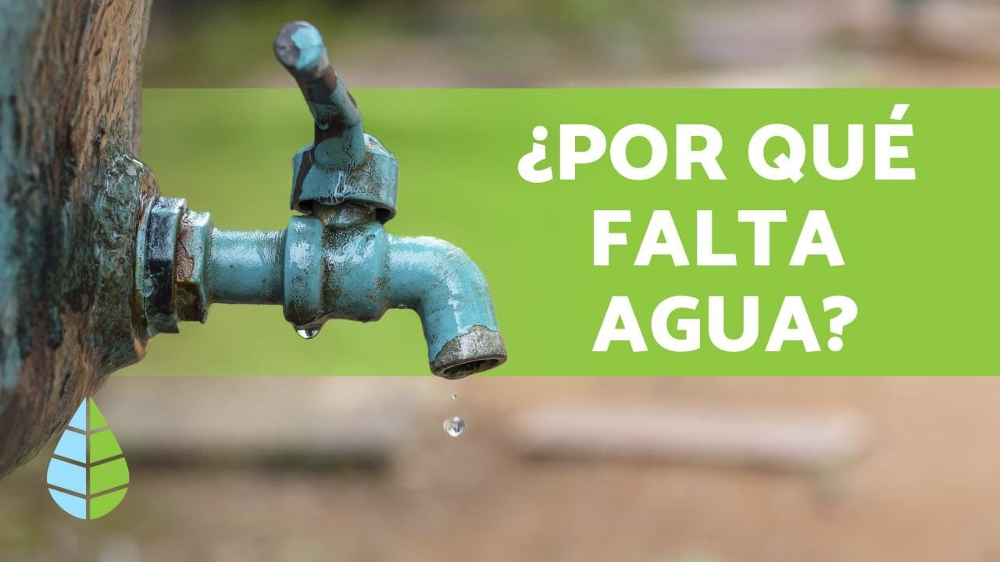
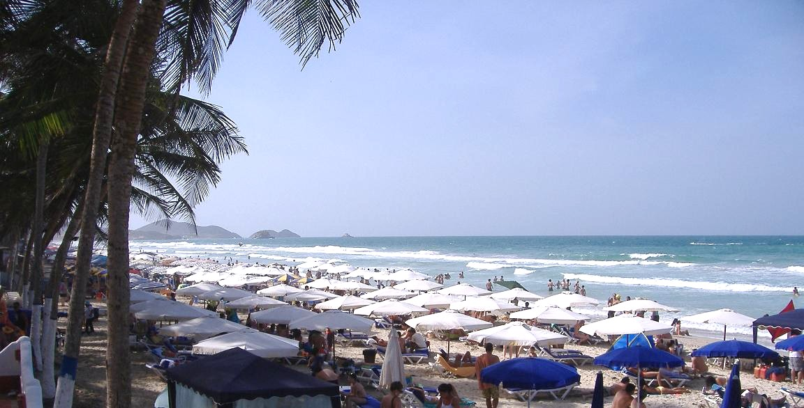

água - Wikcionário

água
Origem: Wikcionário, o dicionário livre. Saltar para a navegação Saltar para a pesquisa A Wikipédia possui oartigo água Gota d'água
Índice
1 Português 1.1 Substantivo 1.1.1 Expressões 1.1.2 Tradução 1.1.3 Verbetes derivados 1.2 Forma verbal 1.3 Etimologia 1.4 Pronúncia 1.4.1 Brasil 1.4.1.1 Carioca 1.4.2 Portugal 1.5 Ver também 1.5.1 No Wikcionário 1.6 Ligações externasPortuguês [ editar ]
Substantivo [ editar ]
Singular Plural Feminino água águasá .gua , feminino singular , comum , simples , primitivo
substância ( H 2 O ) líquida e incolor , insípida e inodora , essencial para a vida da maior parte dos organismos vivos e excelente solvente para muitas outras substâncias; óxido de hidrogênio ( Natureza e Geografia ) a parte líquida que cobre aproximadamente 70 % da superfície terrestre, sob a forma de mares , lagos e rios líquido que corre das árvores quando feridas ou queimadas suco de certos frutos qualquer secreção orgânica aquosa , como suor , saliva , lágrimas , humor , urina etc. ( Patologia ) secreção patológica que se escoa de um órgão; corrimento ( antigo e Veterinária ) o mesmo que água-comum ( coloquial ) sopa rala ondeado e brilho que se observam no cabelo ou em certos mármores , madeiras (sobretudo quando polidas), tecidos , estofos etc. ( figurado ) qualidade , nível intelectual ou artístico Um poeta da melhor água . ( Brasil, figurado e coloquial ) tarefa que não apresenta dificuldade ou não exige esforço O exame foi aquela água . ( Nordeste do Brasil ) qualquer medicamento em forma líquida; infusão , cozimento , decocção ( Brasil, figurado e coloquial ) turvação mental causada por excesso de álcool ; embriaguez O homem estava na maior água . ( Nordeste do Brasil ) época em que os grandes cardumes de peixes nadam em direção às nascentes dos rios ( Nordeste do Brasil e coloquial ) aguardente de cana ; cachaça ( São Tomé e Príncipe ) rio ou ribeiro ( Arquitetura ) vertente de telhado ( Geologia ) solução aquosa onde os cristais se depositam ( Química ) líquido obtido por destilação ou infusão ( Geologia ) transparência de algumas pedras calcárias Água do mármore.Expressões [ editar ]
Vide Wikisaurus:águaTradução [ editar ]
Traduções 'Auhelawa : we'aha Abaza : дзы Abecásio : аӡы (ab) Abenaque : nebi Acadiano : 𒀀 (mû) Acateco : jaʼ Acenês : ie (ace) Achi : yaʼ Aclanon : tubi Adigue : псы (ady) Africâner : water (af) Aguacateco : aʼ Aimará : uma (ay) Aino : ワㇰカ (wakka) Aghul : хьед Alabama : oki Albanês : ujë (sq) Alemânico : wasser (als) Alemão : Wasser (de) n. Alune : 'wele Amara : eiki Amárico : ውሃ (am) , ውኃ (am) Ambai : mereha Ambrim do Sudeste : oei Anakalangu : wei Apache Ocidental : tú Árabe : ماء ' (ar) Aragonês : aigua (an) f. Aramaico : ܡܝܐ (mayyā) (arc) Arapaho : nech Araucano : ko Arguni : wir Armênio : ջոլը (hy) Asturiano : agua (ast) Asumboa : ñio Atayal : usiak Avárico : лъим (av) Avéstico : ap Azerbaijano : su (az) , سو (az) Babar do Sudeste : 'we Babatana : mbisi Babuza : to Baixo Saxão : water (nds) Balinês : yeh (ban) Balúchi : áp Bambara : ji (bm) Banjar : banyu (bjn) Banoni : koromo Bantik : ake Basco : ur (eu) , ura (eu) Batak Toba : aek Bávaro : Wossa (bar) Bemba : ameenshí Bengali : জল (bn) Bezhta : лъи Biak : wār Bicolano Central : tubig (bcl) Bielorrusso : вада (be) (vada) Bilaan : yeqel Bima : oi Birmanês : ရေ (my) Bislamá : water (bi) Bo (Viet Muong) : bea Bobot : way , wai Bonfia : wai Bonggi : beig Bósnio : voda (bs) Bretão : dour (br) , deur (br) Brunei : aying Bukat : danum Búlgaro : вода (bg) (voda) Buli : waya Buru : wae Bwaidoka : dauda Cabo-verdiano : águ Caló/Calão : pañí , clariosa , jurba Canjobal : aʼej Caqchiquel : yaʼ Caroliniano : schaal Catalão : aigua (ca) f. Cazaque : су (su) (kk) Cebuano : túbig (ceb) Chamorro : aqua (ch) , hanom (ch) Checheno : khi (ce) Checo : voda (cs) Cherokee : ᎠᎹ (ama) (chr) Cheyenne : mahpe (chy) Chinês : 水 (chuí) (zh) Chipewyan : tú Chol : jaʼ Chona : mvura (sn) Chontal de Tabasco : jaʼ Chorti : ha , jaʼ Chuj : haʼ Címbrio : bazzar Cingalês : wathura (si) Cocama : uni Comanche : paa Concani : उदाक Coreano : 물 (ko) Córnico : kdowr (kw) m. Corso : acqua (co) Cree : nîpîy (cr) Croata : voda (hr) Cuanhama : omeva (kj) , omeya (kj) Curdo : av (ku) Dagaari Dioula : koɔ Dakota : mini Damar Oriental : 'er (dmr) Dehu : medrixadra Delaware : mbi Dimili : ab (diq) Dinamarquês : vand (da) Dobu : boasi Efate do Sul : nai Emai : vai Embaloh : danum Emiliano : aqua (egl) Bolonhês : âcua (egl) Parmesão : acqua (egl) Escocês : uisge (sco) Eslovaco : voda (sk) Esloveno : voda (sl) Espanhol : agua (es) f. Esperanto : akvo (eo) Estoniano : vesi (et) Etrusco : neri Feroês : vatn (fo) Fijiano : wai (fj) Finlandês : vesi (fi) Francês : eau (fr) f. Frísio : wetter (fy) Friuliano : aghe (fur) Fula : ndiyam (ff) Futuna-Aniua : vai Futuniano : vai Galego : auga (gl) f. , agua (gl) Galês : dŵr (cy) , dwfr (cy) Gallo : aèv Gane : waya Gascão : aiga Gayo : wih Gedaged : naz Gela : mbeti Georgiano : წყალი (ka) (ts'qali) Geser-Gorom : ar Ghari : ko Gilbertês : ran Gorontalo : taluhu (gor) Gótico : 𐍅𐌰𐍄𐍉 (wato) (got) Grego : νερό (el) , ύδωρ (el) (neró), (ídor) Grego Antigo : ὕδωρ (hýdōr) Grico Salentino : nerò Guarani : î (gn) , y (gn) Guzerate : પાણી (gu) Haitiano : dlo (ht) Hano : wai Hanunoo : danúm Havaiano : wai (haw) Hebraico : מים (he) (maym) Hindi : पानी (hi) (pani) Hitita : 𒉿𒋻 ( watar ) , 𒉿𒀀𒋻 (wa-a-tar). , wetenaš Hitu : wael Holandês/Neerlandês : water (nl) n. Hopi : kuuyi Huasteco : jaʼ Húngaro : víz (hu) , öntöz (hu) Ibanag : danum Ido : aquo (io) Iídiche : װאַסער (yi) (vaser) Ilírio : ap Iliun : ēr , 'e Ilocano : danum (ilo) Indonésio : air (id) Inglês : water (en) Inglês Antigo : wæter (ang) , ēa (ang) Interlíngua : aqua (ia) Inuktitut : imiq (iu) Irarutu : were Irlandês : uisce (ga) , dobhar (ga) Islandês : vatna (is) , vatn (is) , veita vatui á (is) , vökva (is) Italiano : acqua (it) f. Itzá : jaʼ Iucateco : haʼ , jaʼ Ixil : aʼ Jacalteco : haʼ Japonês : 水 (みず, mizu) (ja) Javanês : banyu (jv) , wway (jv) , wwe (jv) , bañu (jv) Jawe : we Jingpo : numra Jita : amanji Kairiru : r̃yan Kambera/Sumbanês : wai Kanakanabu : canúmu Kapingamarangi : wai Kavalan : ranúm Kayupulau : na Kedang : wei Kei : wear Kerinci : ayey Kilivila : sopi-momon Kiliwa : jaʼ Kis : dan Kisar : oiri Kodi : wèyo Kosraeano : kof , sroano Kove : eau Kowiai : wálar Kulon-Pazeh : dalúm , dalom , darūm Kwara'ae : kafo Lacandão : haʼ Ladino : agua (lad) Ladino Dolomita : aga , aiva , ega Lahanan : danum Lakota : miní Lampung Api : way Latim : aqua (la) f. Latgaliano : iudiņs (ltg) Lau : kafo Leipon : d̃an Lenakel : nu Leonês : augua Letão : ūdens (lv) Leti : w̃era Liguriano : aiga (lij) , ægoa (lij) Limburguês : water (li) Lingala : mai (ln) Lio : aē Lituano : vanduo (lt) m. Lojban : djacu (jbo) Lombardo : àcqua (lmo) , àqua (lmo) Bergamasco : aqua (lmo) , ègua (lmo) , èigua (lmo) Lou : wei Luxemburguês : Waasser (lb) Madurês : aeŋ Magori : voi Maisin : yun Malaiala : പയസ്സ് (ml) Malaio : air (ms) , air kelapa (ms) Malaio Ambonês : air Malgaxe : rano (mg) , siniben-drano (mg) , ráno (mg) Maltês : ilma (mt) Mam : aʼ Mambai : era Mamboru : ve Manam : daŋ Manchu : ᠮᡠᡴᡝ ( muke ) Mangareva : vai Manggarai : waé Manquês : ushtey (gv) , ushtaghey (gv) Maori : wai (mi) , hane (mi) Maranao : ig Marati : पाणी (mr) , जल (mr) Marquesano do Norte : vai Marshalês : ren (mh) , aiboj (mh) Masela Central : 'wei Massai : engare Mazahua Central : réhé Mekeo : fei Mele-Fila : vai Mengen : me Min Nan : chúi (zh-min-nan) Minangkabau : aie (min) Mingrélio : წყარი (xmf) (ts'q'ari) Mirandês : auga (mwl) Misima-Paneati : wewel Mixteca Yosondua : nducha Mócheno : bòsser Mochó : jaʼ Mohawk : ohnekanos , ohneka Moicano : nbey Mongol : ус (mn) Mongondow : tubig Mopan : jaʼ Mori Baixo : uwoi Mota : pei Motu : ranu Mouk-Aria : aki Muduapa/Vitu : naru Muna : oē Mussau-Emira : ateio Nakanai : lalu Napolitano : acqua (nap) Náuatle Central : atl Náuatle Clássico : ātl , atzintli Náuatle de Tetelcingo : ötzintli̱ , ötl Nauruano : ebok (na) Navajo : tó (nv) , tú (nv) Nehan : laur , kodom Ngad'a : vacé Nias : idanõ Niue : vai Norueguês : vann (no) , vatn (no) Nukuoro : vai Numbami : tina Nyanja : madzi (ny) Nyole : amaaji Occitano : aiga (oc) Oromo : bishaan (om) , biye (om) Ostíaco : йиӈк Paama do Sul : oai Palauano : ralm , dáob Pamona : uë Pampangan : danúm (pam) Papiamento : awa (pap) Paulohi : waele Persa : آب (fa) (âb) Piemontês : eva (pms) Pocomam : haʼ Poconchi : haʼ Pohnpeiano : pihl Polonês : woda (pl) Provençal : aiga Pucapuca : yua Pulaar : ndiyam Punjabi : ਪਾਣੀ (pa) , ਜਲ (pa) , ਆਬ (pa) Puyuma : ane , nnai , a-tuei Quéchua : yaku (qu) , unu (qu) Queqchi : haʼ Quiché : jaʼ Quirguiz : суу (ky) Rapanui : vai Rarotonga : vai Rennell-Belona : bai Romanche : aqua (rm) , aua (rm) , ava (rm) , ova (rm) Romani Vlax : panì (rmy) Romeno : apǎ (ro) f. Rotumano : tạnu Ruanda : amazi (rw) Russo : вода (ru) f. Sa'a : wäi Saaroa : satloum Sabu : ei Sacapulteco : yaʼ Saisiyat : ralom Sami Setentrional : čáhci (se) Samoano : vai (sm) Sânscrito : जल (sa) São-tomense : áua Sardo : aba (sc) Sardo Campidanês : àcua Sardo Logudorês : abba Sasaque : aiq Seimat : kan Sekar : wer Selaru : wer Sengseng : e-ki Sepédi : meetse (nso) Sérvio : вода (sr) Servocroata : voda (sh) Sesoto : metsi (st) Shawnee : nepi Shoshoni : baa' Sica : wair Sicaiana : vai Siciliano : acqua (scn) , occa (scn) , vuvù (scn) , egua (scn) , eva (scn) Siksika : aohkíí Silesiano : woda (szl) Sipacapense : yaʼ Siraya : salom , ralaum , dalum , rarum So'a : wae Sobei : rani Somali : biyo (so) , waraabin (so) Sorábio Alto : woda (hsb) f. Sorábio Baixo : wóda (dsb) Suaíli : maji (sw) Suau : goila Sueco : vatten (sv) n. Sumério : a Sundanês : cai (su) Surinamês : watra (srn) Tae' : wai Tagalagad : qeqel Tagalo : túbig (tl) Tailandês : น้ำ (th) Takuu : vai Taliabu : wayo Talian : àqua Talur : 'we Tamazight : ⴰⵎⴰⵏ (aman) Tâmil : நீர் (ta) , தண்ணீர் (ta) Tana do Sudoeste : nu Tao : ranúm Tarahumara Central : ba'wí Taroco : kasia Tarpia : dan Tártaro : su (tt) Tártaro da Crimeia : suv (crh) Taurepang : tuna Tboli : qel Teanu : ero Tectiteco : aʼ Tela-Masbuar : 'vejei Teop : ruene Termanu : oe Tétum : we (tet) , bee (tet) , nuu-been (tet) Thao : sazum Tigak : rurum Tigrina : mai (ti) Tikopia : vai Tobiano : tat , tati , char , taht , tah'roo Tojolabal : jaʼ Tok Pisin : wara (tpi) Toki Pona : telo Tonganês : vai (to) Tongareva : vai Tontemboano : rano Toquelau : vai Trácio : achel Truquês : chaan , kkónik Tseltal : jaʼ Tsez : лъи ʎi. Tsonga : metsi (ts) Tswana : metsi (tn) Tuamotuano : vai Tugun : 'er Tumbuca : maji (tum) Tupi : y , yg , ygua , 'ï Turco : su (tr) Turcomeno : suw (tk) Tuvaluano : vai Tuvano : суг (sug) (tyv) Tz'utujil : yaʼ Tzotzil : voʼ Ucraniano : вода (uk) Ugarítico : 𐎎𐎊 (my) Ujir : way Uolofe : ndoh (wo) Urdu : پانی (pānī) (ur) , آب (ur) (āb). Uspanteco : jaʼ Valão : aiwe (wa) , êwe (wa) Valenciano : aigua (ca) Varisi : mbesi Vêneto : aqua (vec) , ensa (vec) , lensa (vec) Vietnamita : nước (vi) Volapuque : vat (vo) Võro : vesi (fiu-vro) Wanga : amaatsi Wallisiano : vai Waray-Waray : tubig (war) Watubela : al Wogeo : dan Wolio : uwe Xhosa : amanzi (xh) Yacamul : riaŋ Yamdena : wéye Yapês : rawn , daay Zapoteca : nisa Zoncá : ཆུ (chu) (dz) Zulu : amanzi (zu)Verbetes derivados [ editar ]
água-vai aguaceiro aguacento aguada aguadeiro aguar aguardente , água-ardente (Portugal) aguarrás águas aquanauta aquaplanagem n'águaForma verbal [ editar ]
á .gu:a Ajuda
terceira pessoa do singular do presente do indicativo de aguar
Por favor, faça melhorias e acréscimos naquele verbete e não neste. Obrigado.
Etimologia [ editar ]
Do latim aqua ( la ) (aqua, -ae) .. [ Datação : 973 ]Pronúncia [ editar ]
Brasil [ editar ]
Carioca [ editar ]
AFI : /ˈa.gwɐ/ X-SAMPA : /"a.gw6/Portugal [ editar ]
ouvir fonte ?Ver também [ editar ]
No Wikcionário [ editar ]
Vide Wikisaurus:águaLigações externas [ editar ]
“ água ”, in Aulete , Francisco Júlio de Caldas , iDicionário Aulete . Lexikon Editora Digital. “água” , in Trevisan, R. (coord.); Weiszflog, W. (ed.). Michaelis: Moderno Dicionário da Língua Portuguesa. São Paulo: Melhoramentos, 2012 (nova ortografia). ISBN 978-85-06-06953-0 “ água ”, in Dicionário Aberto “água” , in Dicionário Priberam da Língua Portuguesa [em linha], 2010 “água” , na Infopédia [em linha] “ água ” in Portal da Língua Portuguesa . Instituto de Linguística Teórica e Computacional . Busca no Vocabulário Ortográfico da Língua Portuguesa da Academia Brasileira de Letras . Obtida de " https://pt.wiktionary.org/w/index.php?title=água&oldid=2557682 " Categorias : Dissílabo (Português) Paroxítona (Português) Natureza (Português) Geografia (Português) Patologia (Português) Arcaísmo (Português) Zoologia (Português) Coloquialismo (Português) Figurado (Português) Brasileirismo Regionalismo (Português) Arquitetura (Português) Geologia (Português) Química (Português) Trissílabo (Português) Proparoxítona (Português) Proparoxítona aparente (Português) Entrada com etimologia (Português) Entrada de étimo latino (Português) Entrada com pronúncia (Português) Substantivo (Português) Forma verbal (Português) Entrada com imagem (Português) Categorias ocultas: !Entrada com correlato na Wikipédia (Português) !Entrada (Português) Páginas que usam hiperligações mágicas ISBNMenu de navegação
Ferramentas pessoais
Não autenticado Discussão Contribuições Criar uma conta EntrarEspaços nominais
Entrada DiscussãoVariantes
Vistas
Ler Editar HistóricoMais
Pesquisa
Navegação
Página principal Portal comunitário Esplanada Mudanças recentes Novas entradas Página aleatória Categorias Ajuda DonativosFerramentas
Páginas ligadas a esta Alterações relacionadas Páginas especiais Enlace permanente Informações da página Citar esta páginaImprimir/exportar
Criar um livro Descarregar como PDF Versão para impressãoNoutras línguas
Aragonés Asturianu Azərbaycanca Беларуская ᏣᎳᎩ Čeština Cymraeg Dansk Deutsch ދިވެހިބަސް Ελληνικά English Esperanto Español Eesti فارسی Suomi Na Vosa Vakaviti Français Frysk Galego Magyar Հայերեն Bahasa Indonesia Ido Italiano 日本語 ქართული ភាសាខ្មែរ ಕನ್ನಡ 한국어 Kurdî Кыргызча Lëtzebuergesch Limburgs ລາວ Lietuvių Latviešu Malagasy Монгол Dorerin Naoero Nāhuatl Nederlands Norsk Oromoo Polski Română Русский Soomaaliga Српски / srpski Svenska Kiswahili தமிழ் Тоҷикӣ ไทย Türkmençe Türkçe ئۇيغۇرچە / Uyghurche Oʻzbekcha/ўзбекча Volapük 中文 Bân-lâm-gú Esta página foi editada pela última vez às 08h51min de 17 de outubro de 2019. Este texto é disponibilizado nos termos da licença Atribuição-CompartilhaIgual 3.0 Não Adaptada (CC BY-SA 3.0) da Creative Commons ; pode estar sujeito a condições adicionais. Para mais detalhes, consulte as condições de utilização . Política de privacidade Sobre o Wikcionário Aviso Geral Versão móvel Programadores Estatísticas Declaração sobre ''cookies''